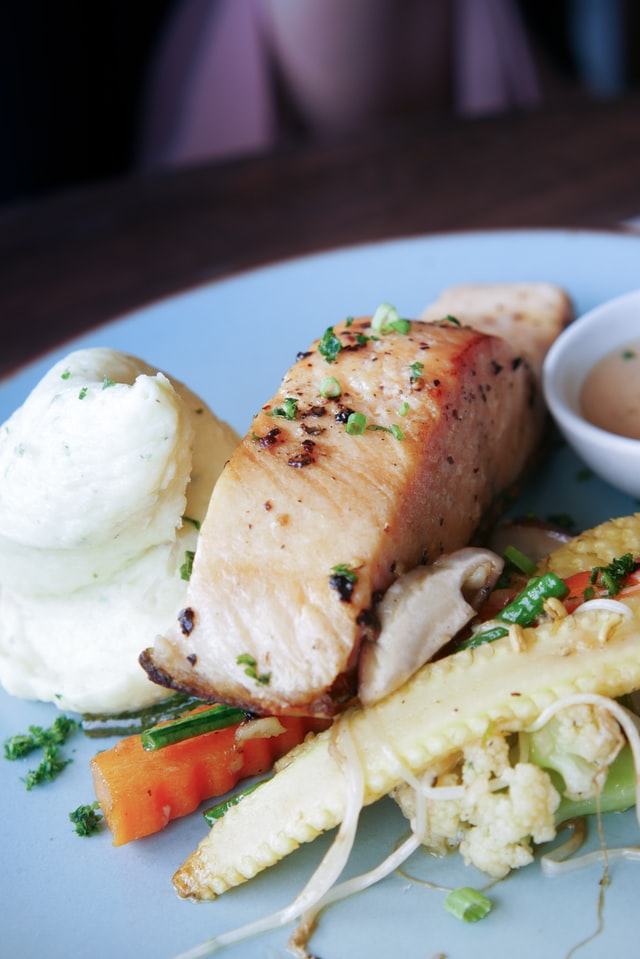

Teriyaki Salmon

Description
This salmon recipe is a favorite and turns out full of
delicious flavor every time. Follow this recipe for a delicious
marinade, then cook using your preferred method and I guarantee it
will be a hit! Pair it with some roasted veggies and rice to complete
your meal.
Ingredients
- 4 salmon steaks
- Sesame oil
- Lemon juice
- Soy sauce
- Brown sugar
- Sesame seeds
- Ground mustard
- Ground ginger
- Garlic powder
Steps
- Mix sesame oil, lemon juice, soy sauce, brown sugar, sesame seeds,
ground mustard, ginger, and garlic powder in a small saucepan over low heat.
Bring to a simmer, stirring until sugar has dissolved. Set aside 1/2 cup of marinade
for basting.
- Pour remaining marinade into a resealable plastic bag and place salmon into the marinade.
Squeeze air out of the bag, seal, and marinate the salmon steaks for at least 1 hour
(2 hours for better flavor). Drain and discard used marinade.
- Set oven rack about 4 inches from the heat source and preheat the oven's broiler.
Place salmon steaks into a broiler pan and broil for 5 minutes. Brush steaks with reserved
marinade, turn, and broil until fish is opaque and flakes easily, about 5 more minutes.
Brush again with marinade.
Back to Odin Recipes